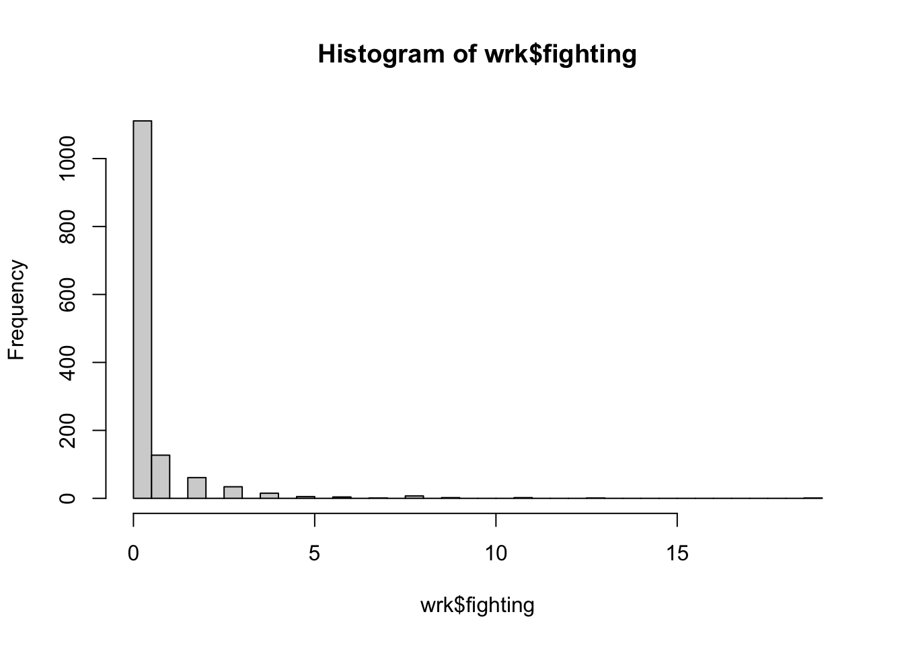

set.seed(20231005)
the.questions<-1:12
graded<-sample(the.questions,1)
graded[1] 3Replicating Ferwerda and Miller (2014)
set.seed(20231005)
the.questions<-1:12
graded<-sample(the.questions,1)
graded[1] 3Question 3 is the graded question for this assignment
In this assignment, we’ll walk through the logic and design of Ferwerda and Miller (2014).
Conceptually, our goal in this lab is to see how scholars might use historical knowledge to make causal claims with observational data.
Specifically, we will see how F&M leverage a claim about how borders are drawn to assess the effects of different types of governing strategies.
Practically, we will continue to develop our statistical skills, introducing some core concepts from base R.
Spefically we will see how we can use:
for() loops to repeat a process like calculating a mean, over multiple variableswith() function to avoid having to write out df$variableapply() functions (namely sapply() and tapply()) to apply functions to a sets of variables (sapply()) and to subgroups within a set of variables (tapply())These are useful skills that broadly help you write your code more efficiently. Things like for() loops, functions() and apply() can reduce the amount of copying, pasting and replacing you have to do, which in turn can reduce the amount of errors induced by forgetting to change a variable name, or mistyping a command.
But the first time you see a for loop, or define your own function, it will likely seem a bit abstract, and obtuse.That’s ok. The goal is that you have a better, if not perfect, understanding of these concepts which we will use throughout the course.
What’s the research question?
What’s the theoretical framework?
What’s the empirical design?
What’s are the main results?
What’s the research question? Ferwerda and Miller (F&M or “the authors” henceforth) are interested in what type of foreign rule generates resistance.
What’s the theoretical framework? The authors argue that different theories in international relations generate different predictions for different types of foreign rule. Some suggest it shouldn’t matter–instead the relative coercive power of the foreign rulers is the primary factor for determining the degree of local resistance. Others argue that devolving power to native authorities may weaken resistance, either by producing more effective counter insurgencies or dampening nationalist reactions to foreign rule. Evaluating these competing theories is complicated by the fact that the type of foreign rule imposed is not random but instead a function of a number of strategic factors that would complicate comparisons between instances of different types of rule–since typically we only observe one type of foreign rule or another.
What’s the empirical design? F&M take advantage of a unique situation that existed in France during the German occupation in WWII, where the north of France was governed by the Germans while the South of France was subject to rule by the local Vichy government. The key feature of this that the dividing line between these types of rule at the local level, appears to be plausibly random. They write:
[T]he line was demonstrably arbitrary at the local level. Seemingly blind to existing boundaries, the demarcation line cut across political units such as departments, cantons, and communes as well as geographic features such as mountain ranges and rivers. As a result, the assignment of a commune to either the German or the Vichy zone in areas close to the line may be plausibly viewed as quasi-random.
This claim is key because it allows them to argue that any differences in rates of resistance events on one side of the line compared to another are due to the type of government in those communes (the primary unit of analysis in this study) and not other factors (like the number of targets or the ruggedness of the terrain).
Ferwerda and Miller propose a regression discontinuity design to test theories about what types of political devolution lead to resistance to foreign rule. The estimand (target of inference, thing they’re trying to estimate) for this identification strategy is
\[ \tau = \lim_{z\downarrow c} E[Y_{i,D=1}|X_i\leq z]-\lim_{z\uparrow c} E[Y_{i,D=1}|X_i\geq z] \]
F&M’s estimand is just the thing that they’re interested in estimating. So \(\tau\) represents the difference of the average number of resistance events for communes north of the demarcation line \(\lim_{z\downarrow c} E[Y_{i,D=1}|X_i\leq z]\) minus the average in communes just below the line \(\lim_{z\downarrow c} E[Y_{i,D=1}|X_i\leq z]\). The \(E[...]\) gives us the expected value of the quantity inside the brackets, which we can think of as a mean or average. The \(Y\) is just a symbol for the outcome, here resistance events (sabotages or fighting). The \(D\) is indicator for the type of denotes communes in the north under German rule. The \(|X_i\leq z\) reflects the fact that these means are conditional on a communes distance to the demarcation line \(X\) up to a certain cutoff \(z\).
Please run the following command to load the data:
# Load the data
load(url("https://pols2580.paultesta.org/files/data/04_lab.rda"))And write code to load any packages you think you might need to analyze the data.
# Libraries
library("tidyverse")── Attaching core tidyverse packages ──────────────────────── tidyverse 2.0.0 ──
✔ dplyr 1.1.4 ✔ readr 2.1.4
✔ forcats 1.0.0 ✔ stringr 1.5.1
✔ ggplot2 3.4.4 ✔ tibble 3.2.1
✔ lubridate 1.9.3 ✔ tidyr 1.3.0
✔ purrr 1.0.2
── Conflicts ────────────────────────────────────────── tidyverse_conflicts() ──
✖ dplyr::filter() masks stats::filter()
✖ dplyr::lag() masks stats::lag()
ℹ Use the conflicted package (<http://conflicted.r-lib.org/>) to force all conflicts to become errorsThe next commands tell us a little about the dataset. Specifically, there are 1371 observations (rows) and 14 variables (columns)
dim(wrk)[1] 1371 14names(wrk) [1] "south" "distancetotrain" "communications" "hectares_scaled"
[5] "population" "pctright" "pctleft" "sd_elev250"
[9] "near_km" "s" "fighting" "area_sqkm"
[13] "north" "nom_dept" Here’s a brief codebook to help you along the way
Answer: The primary unit of analysis is the commune.
Specifically:
# Write your code here
addmargins(table(wrk$nom_dept,wrk$north))
0 1 Sum
CHARENTE 62 299 361
CHER 116 133 249
SAONE-ET-LOIRE 336 175 511
VIENNE 57 193 250
Sum 571 800 1371# Percentage of commmunes treated with German occupation:
apply(table(wrk$nom_dept,wrk$north),1, prop.table)
CHARENTE CHER SAONE-ET-LOIRE VIENNE
0 0.1717452 0.4658635 0.6575342 0.228
1 0.8282548 0.5341365 0.3424658 0.772Answer: There are four departments. The number of communes per department varies from 249 in Cher to 551 in Saone-et-Loire. The number of “treated” communes also varies by department from 83 percent in Charente and 77 percent in Vienne to 34 percent in Saone-et-Loire. This variation in size of departments and the percentage of treated communes has potential implications for the analysis that we’ll return to later in the course.
# Write your code here
# Sabotage
summary(wrk$s) Min. 1st Qu. Median Mean 3rd Qu. Max.
0.0000 0.0000 0.0000 0.4362 0.0000 29.0000 hist(wrk$s,breaks=30)
mean(wrk$s==0)[1] 0.8599562sum(wrk$s)[1] 598# Fighting
summary(wrk$fighting) Min. 1st Qu. Median Mean 3rd Qu. Max.
0.000 0.000 0.000 0.434 0.000 19.000 hist(wrk$fighting,breaks=30)
mean(wrk$fighting==0)[1] 0.8103574sum(wrk$fighting)[1] 595sum(wrk$fighting)+sum(wrk$s) # differs from number reported in paper, probably due to exclusion of missing cases[1] 1193Answer: The primary outcomes of interest are sabotage events and fighting events at the commune level from December 1942 to September 1944. There were a total of 598 unique sabotage events and 595 unique fighting events during this time period in these communes. Both types of events are relatively rare: 85 percent of communes have no sabotage events and 81 have no fighting events. Some communes have a great deal, with the maximum number of sabotage events being 29 and the maximum number of fighting events being 19.
What variable or variables in the data describe treatment status?
# Write your code here
table(wrk$north)
0 1
571 800 table(wrk$north,wrk$south)
0 1
0 0 571
1 800 0Answer: The treatment is defined as the type of government a commune experienced during the war, defined relative to the demarcation line. Communes north of the demarcation line experienced German occupation (N=800), while communes south of the line were subject to Vichy rule (N=571)
So one of the implications of this design is that a commune’s status relative to the demarcation line (and thus type of government/devolution of power) is “as-if” random. There’s no way to really prove this claim, but we can test some of its observable implications.
Specifically, if the Germans essentially drew the demarcation line at random (at least relative to the local boundaries of specific communes), then the observable characteristics of communes north of the line (under German occupation) and south of the line (under Vichy rule) should be similar.
# Write your code here
# You might find something like the following useful
## List of covariates
# the_vars<-c("distancetotrain","communications","hectares_scaled","population",
# "pctright","pctleft","sd_elev250","near_km")
## Holders for means
# north_means<-c()
# south_means<-c()
# #Replace ???? in code below with some useful logical statement
# for(i in the_vars){
# print(paste("Now summarizing",i))
# north_means[i]<-mean(wrk[????,i])
# south_means[i]<-mean(wrk[????,i])
#
#
# }Answer:
# Write your code here
the_vars<-c("distancetotrain","communications","hectares_scaled","population",
"pctright","pctleft","sd_elev250","near_km")
north_means<-c()
south_means<-c()
for(i in the_vars){
print(paste("Now summarizing",i))
north_means[i]<-mean(wrk[wrk$north==1,i],na.rm=T)
south_means[i]<-mean(wrk[wrk$north==0,i],na.rm=T)
}[1] "Now summarizing distancetotrain"
[1] "Now summarizing communications"
[1] "Now summarizing hectares_scaled"
[1] "Now summarizing population"
[1] "Now summarizing pctright"
[1] "Now summarizing pctleft"
[1] "Now summarizing sd_elev250"
[1] "Now summarizing near_km"diff_means<-north_means-south_meansknitr::kable(cbind(north_means,south_means,diff_means))| north_means | south_means | diff_means | |
|---|---|---|---|
| distancetotrain | 4.0037500 | 4.2889667 | -0.2852167 |
| communications | 1.5375000 | 1.4956217 | 0.0418783 |
| hectares_scaled | 51.2661532 | 39.6845843 | 11.5815689 |
| population | 997.4450000 | 740.1295972 | 257.3154028 |
| pctright | 0.3969024 | 0.2743438 | 0.1225586 |
| pctleft | 0.3930110 | 0.5333780 | -0.1403671 |
| sd_elev250 | 20.3176547 | 25.5892396 | -5.2715849 |
| near_km | 23.9157269 | 19.8388128 | 4.0769140 |
Answer: See above
So how should we make sense of these differences? Are they substantively large? Do they provide support for or against a claim that the demarcation lines is “as if” random?
Answering these questions has proved difficult, since different variables are measured on different scales, and it’s hard to quantify what big is.
Last week, we saw that we could assess these differences relative to a claim about the world (“i.e. if there were no difference between theses groups, how likely is it that we would a difference as large as we did”).
Today, we’ll consider another way of thinking about how big differences are, which is to think about how much the difference might vary.
We know from our first week on measurement, that things like variance and standard deviations can be used to describe the spread of a random variable’s distribution (how much observations tend to vary around their means).
Means and differences of means are functions of variables, and so we can think about these quantities as having their own distributions and spreads.
So one way to compare the magnitude of the differences you calcuated above, is to standardize each difference by its standard error – that is, we could divide each difference by the standard deviation of the sampling distribution of that difference (how much we might expect that difference to vary). Don’t worry about the terminology right now–we’ll cover these concepts in greater detail later in the course.
For now, we’ll use as a rough rule of thumb, that standardized differences greater than 2 are “big,” that is, they are unlikely to arise by chance and thus provide evidence against the claim that the demarcation line was drawn as if random.
The code below defines a function to calculate these standardized differences and returns the standardized difference (as well as the means, difference of means, and standard error of that difference) for the distancetotrain variable.
std_diff_fn <- function(x){
# inputs
# x: the variable we want to calculate a standardized difference of
stopifnot(is.character(x))
#1. Calculate means and difference of means
mu1 <- with(wrk, mean(wrk[north==1, x],na.rm=T))
mu0 <- with(wrk, mean(wrk[north==0, x],na.rm=T))
diff <- mu1 - mu0
#2. Calculate "standard error" of difference
# Assuming unequal variance of groups
sd1 <- with(wrk, sd(wrk[north==1, x],na.rm=T))
sd0 <- with(wrk, sd(wrk[north==0, x],na.rm=T))
n1 <- with(wrk, sum(!is.na(wrk[north==1, x])))
n0 <- with(wrk, sum(!is.na(wrk[north==0, x])))
se <- sqrt( sd1^2/n1 + sd0^2/n0)
#3. Standardize difference
std_diff <- diff/se
#4. Combine Results
results <- c(North=mu1, South=mu0,Differnece=diff, SE = se, StdDiff = std_diff)
return(results)
}
std_diff_fn("distancetotrain") North South Differnece SE StdDiff
4.0037500 4.2889667 -0.2852167 0.2086812 -1.3667580 sapply() function to apply, the std_diff_fn() to the covariates in the_vars.Evaluate these standardized differences in relation to the authors’ claims that the demarcation line can be seen as being as-if randomly assigned.
# Write your code here
# hint:
# sapply(some object here, some function here)Answer:
std_diffs <- sapply(the_vars,std_diff_fn)
# Unformatted
std_diffs distancetotrain communications hectares_scaled population
North 4.0037500 1.53750000 51.266153 997.445000
South 4.2889667 1.49562172 39.684584 740.129597
Differnece -0.2852167 0.04187828 11.581569 257.315403
SE 0.2086812 0.07629262 1.850539 123.135504
StdDiff -1.3667580 0.54891659 6.258484 2.089693
pctright pctleft sd_elev250 near_km
North 0.39690241 0.393010980 20.317655 23.9157269
South 0.27434378 0.533378040 25.589240 19.8388128
Differnece 0.12255864 -0.140367060 -5.271585 4.0769140
SE 0.01057544 0.009591825 1.006851 0.7158021
StdDiff 11.58898370 -14.634030948 -5.235715 5.6955885# Nicely formatted
knitr::kable(std_diffs)| distancetotrain | communications | hectares_scaled | population | pctright | pctleft | sd_elev250 | near_km | |
|---|---|---|---|---|---|---|---|---|
| North | 4.0037500 | 1.5375000 | 51.266153 | 997.445000 | 0.3969024 | 0.3930110 | 20.317655 | 23.9157269 |
| South | 4.2889667 | 1.4956217 | 39.684584 | 740.129597 | 0.2743438 | 0.5333780 | 25.589240 | 19.8388128 |
| Differnece | -0.2852167 | 0.0418783 | 11.581569 | 257.315403 | 0.1225586 | -0.1403671 | -5.271585 | 4.0769140 |
| SE | 0.2086812 | 0.0762926 | 1.850539 | 123.135504 | 0.0105754 | 0.0095918 | 1.006851 | 0.7158021 |
| StdDiff | -1.3667580 | 0.5489166 | 6.258484 | 2.089693 | 11.5889837 | -14.6340309 | -5.235715 | 5.6955885 |
Answer: The claim of as-if randomization leads us to expect that communes north and south of the line should be similar on these variables that we can measure (as well as those we can’t). But having caluclated standardized differences, it looks like the communes north of the demarcation line differ in a number of ways from the communes south of the demarcation line. They tend to have more farmland, larger populations, a greater percentage of people who voted for right-leaning parties in the last election, lower overall elevations. So the claim for the full set of communes seems somewhat unplausible.
Hmmm… so using our “standardized differences bigger than two” rule of thumb, we became a little bit skeptical about whether the claim of as-if random was justified for the whole sample.
Now we’ll explore whether for a subset of the sample, this claims appears more plausible.
Specifically, we’ll look at whether for communes within a narrower window or bandwidth around the demarcation line differences in observed covariates between communes north and south of the line are small, and thus seem consistent with a claim that the line of demarcation is as good as randomly assigned for these communes.
To do so, we’ll modify our std_diff_fn and create a new function called new_std_diff_fn
new_std_diff_fn <- function(x, c = max(wrk$near_km,na.rm=T)){
# inputs
# x: the variable we want to calculate a standardized difference of
# c: the cutoff distance from the borderd
stopifnot(is.character(x))
stopifnot(is.numeric(c))
# What's going on here?
wrk <- wrk[wrk$near_km <= c,]
#1. Calculate means and difference of means
mu1 <- with(wrk, mean(wrk[north==1, x],na.rm=T))
mu0 <- with(wrk, mean(wrk[north==0, x],na.rm=T))
diff <- mu1 - mu0
#2. Calculate "standard error" of difference
# Assuming unequal variance of groups
sd1 <- with(wrk, sd(wrk[north==1, x],na.rm=T))
sd0 <- with(wrk, sd(wrk[north==0, x],na.rm=T))
n1 <- with(wrk, sum(!is.na(wrk[north==1, x])))
n0 <- with(wrk, sum(!is.na(wrk[north==0, x])))
se <- sqrt( sd1^2/n1 + sd0^2/n0)
#3. Standardize difference
std_diff <- diff/se
#4. Combine Results
results <- c(North=mu1, South=mu0,Differnece=diff, SE = se, StdDiff = std_diff)
return(results)
}
new_std_diff_fn("distancetotrain", c=10) North South Differnece SE StdDiff
3.5290323 4.0909091 -0.5618768 0.4131077 -1.3601219 new_std_diff_fn() differences from std_diff_fn()Answer: Our modified new_std_diff_fn contains an additional argument c, whose default value is set to c = max(wrk$near_km,na.rm=T).
The c argument is then used to subset the data inside the function, wrk <- wrk[wrk$near_km <= c,], so that the function returns calculations based off the values for communes that are within c km of the demarcation line.
Great! So this modified function can calculate conditional means for a subset of observations (communes) within c kilometers of the demarcation line.
Use new_std_diff_fn() to calculate the standardized differnces for the covariates in the_vars for communes within 10 km north or south of the demarcation line (i.e., c=10).
Evaluate these differences as they relate to F&M’s claim of “as-if” randomization.
# Write your code here
sapply(the_vars,new_std_diff_fn,c=10) distancetotrain communications hectares_scaled population pctright
North 3.5290323 1.5548387 48.595407 1257.76774 0.28311626
South 4.0909091 1.4125874 41.646461 707.51748 0.25136878
Differnece -0.5618768 0.1422513 6.948946 550.25026 0.03174748
SE 0.4131077 0.1617868 3.686990 367.73333 0.02667063
StdDiff -1.3601219 0.8792515 1.884721 1.49633 1.19035350
pctleft sd_elev250 near_km
North 0.49014613 17.6661522 6.1250279
South 0.53676801 19.2212878 6.3868316
Differnece -0.04662189 -1.5551356 -0.2618037
SE 0.02388174 1.6013191 0.2594980
StdDiff -1.95219806 -0.9711591 -1.0088852Answer: For the subset of communes within 10 km of the line, the differences in observed covariates are smaller and the claim of as-if randomization, based on these observable covariates, seems more plausible.
So the identifying assumption seems more plausible for communes closer to the demarcation line. Now let’s estimate the “effect” of German rule on resistance activity (sabotage and fighting) for the full sample and for the subset of communes within 10 km of the demarcation line.
Calculate the difference in the mean number of sabotage events and fighting events for communes north and south of the demarcation line, for the full sample of communes and the communes within 10 km of the demarcation line. Provide a substantive interpretation of these differences.
You can use logical indexing, or the new_std_diff_fn if you’d like. Try to do it both ways to savor the joy of logical indexing and the magic of functions.
# Write your code hereAnswer:
# Sabotage
# Full sample
mu_s_north<-mean(wrk$s[wrk$north==1])
mu_s_south<-mean(wrk$s[wrk$north==0])
diff_s<-mu_s_north-mu_s_south
diff_s[1] 0.1022176# 10k
mu_s_north_10k<-mean(wrk$s[wrk$north==1&wrk$near_km<=10])
mu_s_south_10k<-mean(wrk$s[wrk$north==0&wrk$near_km<=10])
diff_s_10k<-mu_s_north_10k-mu_s_south_10k
diff_s_10k[1] 0.6325739# Fighting
# Full Sample
mu_f_north<-mean(wrk$fighting[wrk$north==1])
mu_f_south<-mean(wrk$fighting[wrk$north==0])
diff_f<-mu_f_north-mu_f_south
diff_f[1] -0.08161121# 10k
sum(wrk$fighting[wrk$north==1&wrk$near_km<=10])[1] 97sum(wrk$fighting[wrk$north==0&wrk$near_km<=10])[1] 92mu_f_north_10k<-mean(wrk$fighting[wrk$north==1&wrk$near_km<=10])
mu_f_south_10k<-mean(wrk$fighting[wrk$north==0&wrk$near_km<=10])
diff_f_10k<-mu_f_north_10k-mu_f_south_10k
diff_f_10k[1] -0.01755019# Using the new_std_diff_fn
sapply("s",new_std_diff_fn) s
North 0.47875000
South 0.37653240
Differnece 0.10221760
SE 0.09655532
StdDiff 1.05864287sapply("fighting",new_std_diff_fn) fighting
North 0.40000000
South 0.48161121
Differnece -0.08161121
SE 0.07440703
StdDiff -1.09682120sapply("s",new_std_diff_fn,c=10) s
North 1.0451613
South 0.4125874
Differnece 0.6325739
SE 0.3038117
StdDiff 2.0821249sapply("fighting",new_std_diff_fn,c=10) fighting
North 0.62580645
South 0.64335664
Differnece -0.01755019
SE 0.19431084
StdDiff -0.09032019Answer: There are 0.1022176 more sabotage events in communes under German rule in the full sample and -0.0816112 fewer fighting events. Substantively, we might say that for every 10 additional communes under German rule we would expect to see 1 additional act of sabotage.
Within 10 km of the line there are 0.6325739 more sabotage events and -0.0175502 fewer fighting events. So now for every 10 additional communes under German rule (within 10 km of the line) we might expect 6 more sabotage events. Only the difference in sabotage events within 10 km appears to pass our bigger than two standardized differences rule of thumb.
Note these results differ from those reported in the text, in part because F&M are weighting events by area of the commune.
Comment on the relative similarity of or differences in the findings from estimating effects for each department compared to pooling all the communes together?
Below is some code to get you started the hard way, you could also try modifying the new_std_diff_fn
# Here's some code to get you started
# 10k
# Sabotage
# Calculate means by department for communes in the north within 10 km of line
mus_s_north_dep_10k <- with(wrk[wrk$north==1 & wrk$near_km<=10,], tapply(s, nom_dept, mean))
# Calculate means by department for communes in the south within 10 km of line
mus_s_south_dep_10k <- with(wrk[wrk$north==0 & wrk$near_km<=10,], tapply(s, nom_dept, mean))
# Calculate differences within each department
diffs_s_south_dep_10k <- mus_s_north_dep_10k-mus_s_south_dep_10k
# Print differences.
diffs_s_south_dep_10k CHARENTE CHER SAONE-ET-LOIRE VIENNE
0.1111111 0.7260870 1.2085572 0.2758621 ###########
# Your turn
###########
# 10k
# Fighting
# Full sample
# Sabotage
# Full sample
# Fighting# Write your code here
# Full Sample
# Sabotage
mus_s_north_dep<-with(wrk[wrk$north==1,],tapply(s,nom_dept,mean))
mus_s_south_dep<-with(wrk[wrk$north==0,],tapply(s,nom_dept,mean))
diffs_s_south_dep<-mus_s_north_dep-mus_s_south_dep
diffs_s_south_dep CHARENTE CHER SAONE-ET-LOIRE VIENNE
0.04488079 0.28020482 0.58261905 0.30006363 # Fighting
mus_f_north_dep<-with(wrk[wrk$north==1,],tapply(fighting,nom_dept,mean))
mus_f_south_dep<-with(wrk[wrk$north==0,],tapply(fighting,nom_dept,mean))
diffs_f_south_dep<-mus_f_north_dep-mus_f_south_dep
diffs_f_south_dep CHARENTE CHER SAONE-ET-LOIRE VIENNE
-0.1717014 0.4233861 0.1538095 -0.8750114 # 10k
# Sabotage
mus_s_north_dep_10k<-with(wrk[wrk$north==1&wrk$near_km<=10,],tapply(s,nom_dept,mean))
mus_s_south_dep_10k<-with(wrk[wrk$north==0&wrk$near_km<=10,],tapply(s,nom_dept,mean))
diffs_s_south_dep_10k<-mus_s_north_dep_10k-mus_s_south_dep_10k
diffs_s_south_dep_10k CHARENTE CHER SAONE-ET-LOIRE VIENNE
0.1111111 0.7260870 1.2085572 0.2758621 # Fighting
mus_f_north_dep_10k<-with(wrk[wrk$north==1&wrk$near_km<=10,],tapply(fighting,nom_dept,mean))
mus_f_south_dep_10k<-with(wrk[wrk$north==0&wrk$near_km<=10,],tapply(fighting,nom_dept,mean))
diffs_f_south_dep_10k<-mus_f_north_dep_10k-mus_f_south_dep_10k
diffs_f_south_dep_10k CHARENTE CHER SAONE-ET-LOIRE VIENNE
-0.4027778 0.5971014 0.3180100 -1.7389163 Answer: So it seems like there’s a lot of heterogeneity across department. For sabotage events, the effects of German rule appear largest in Cher and Saone-et-Loire, while they’re more modest in Charente and Vienne. For fighting events, we see a difference in the sign of the effect by department. In Charente and Vienne, fighting is more common in Vichy communes, while in Cher and Saone-et-Loire it is more common in German communes. This raise some questions about the generality of the overall findings.
If you’re interested Kochner and Monteiro (2016) provide an even more thorough critique of Ferwerda and Miller’s analysis, disputing the validity of F&M’s identifying assumption using both historical records and an empirical analysis of the relative location railroad tracks.
If we wanted to modify our function to calculate standardized differences, we could add an option to subset by department (not perfect, but it does the trick…)
new_new_std_diff_fn <- function(x, c = max(wrk$near_km,na.rm=T), the_dept = "CHARENTE"){
# inputs
# x: the variable we want to calculate a standardized difference of
# c: the cutoff distance from the borderd
stopifnot(is.character(x))
stopifnot(is.numeric(c))
# What's going on here?
wrk <- wrk[wrk$near_km <= c & wrk$nom_dept == the_dept,]
#1. Calculate means and difference of means
mu1 <- with(wrk, mean(wrk[north==1, x],na.rm=T))
mu0 <- with(wrk, mean(wrk[north==0, x],na.rm=T))
diff <- mu1 - mu0
#2. Calculate "standard error" of difference
# Assuming unequal variance of groups
sd1 <- with(wrk, sd(wrk[north==1, x],na.rm=T))
sd0 <- with(wrk, sd(wrk[north==0, x],na.rm=T))
n1 <- with(wrk, sum(!is.na(wrk[north==1, x])))
n0 <- with(wrk, sum(!is.na(wrk[north==0, x])))
se <- sqrt( sd1^2/n1 + sd0^2/n0)
#3. Standardize difference
std_diff <- diff/se
#4. Combine Results
results <- c(North=mu1, South=mu0,Differnece=diff, SE = se, StdDiff = std_diff)
return(results)
}
# Sabotage 10k
new_new_std_diff_fn("s",10, the_dept="CHARENTE") North South Differnece SE StdDiff
0.11111111 0.00000000 0.11111111 0.05312127 2.09165007 new_new_std_diff_fn("s",10, the_dept="CHER") North South Differnece SE StdDiff
0.8260870 0.1000000 0.7260870 0.3773161 1.9243468 new_new_std_diff_fn("s",10, the_dept="SAONE-ET-LOIRE") North South Differnece SE StdDiff
1.9552239 0.7466667 1.2085572 0.6461002 1.8705413 new_new_std_diff_fn("s",10, the_dept="VIENNE") North South Differnece SE StdDiff
0.2758621 0.0000000 0.2758621 0.1850080 1.4910818 # Fighting 10k
new_new_std_diff_fn("fighting",10, the_dept="CHARENTE") North South Differnece SE StdDiff
0.05555556 0.45833333 -0.40277778 0.26507398 -1.51949195 new_new_std_diff_fn("fighting",10, the_dept="CHER") North South Differnece SE StdDiff
1.1304348 0.5333333 0.5971014 0.3743506 1.5950329 new_new_std_diff_fn("fighting",10, the_dept="SAONE-ET-LOIRE") North South Differnece SE StdDiff
0.7313433 0.4133333 0.3180100 0.2377393 1.3376416 new_new_std_diff_fn("fighting",10, the_dept="VIENNE") North South Differnece SE StdDiff
0.6896552 2.4285714 -1.7389163 1.3379197 -1.2997165 # Full Sample
# Sabotage Full
new_new_std_diff_fn("s", the_dept="CHARENTE") North South Differnece SE StdDiff
0.17391304 0.12903226 0.04488079 0.08191133 0.54791911 new_new_std_diff_fn("s", the_dept="CHER") North South Differnece SE StdDiff
0.32330827 0.04310345 0.28020482 0.08671967 3.23115645 new_new_std_diff_fn("s", the_dept="SAONE-ET-LOIRE") North South Differnece SE StdDiff
1.1600000 0.5773810 0.5826190 0.3104033 1.8769744 new_new_std_diff_fn("s", the_dept="VIENNE") North South Differnece SE StdDiff
0.4404145 0.1403509 0.3000636 0.1353704 2.2166121 # Fighting Full
new_new_std_diff_fn("fighting", the_dept="CHARENTE") North South Differnece SE StdDiff
0.07023411 0.24193548 -0.17170137 0.11368411 -1.51033750 new_new_std_diff_fn("fighting", the_dept="CHER") North South Differnece SE StdDiff
0.6992481 0.2758621 0.4233861 0.1325777 3.1934936 new_new_std_diff_fn("fighting", the_dept="SAONE-ET-LOIRE") North South Differnece SE StdDiff
0.5942857 0.4404762 0.1538095 0.1331109 1.1554988 new_new_std_diff_fn("fighting", the_dept="VIENNE") North South Differnece SE StdDiff
0.5284974 1.4035088 -0.8750114 0.4096784 -2.1358493